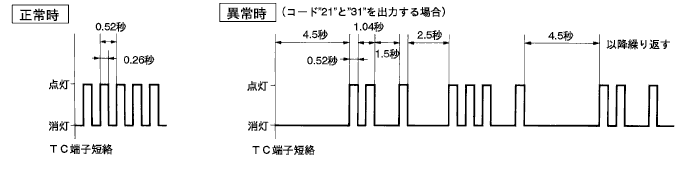

|
Using SST (diagnosis check wire No.2), connect between terminals 13 (TC) ←→ 4 (CG) of the DLC3.
- SST
- 09843-18040
- ■ NOTICE ■
- Never connect the wrong terminals as this will cause a malfunction.
Turn IG ON.
Read the DTC (number of blinks of the check engine warning light).

- ■ NOTICE ■
- When letters are used, as in TCCS code C1, the code is expressed as a 2-digit base 16 number. For C1, the light blinks 12 times and then blinks 1 times. (Blinking intervals are the same)
| Base-16 | Number of Blinks |
|---|---|
| A | 10 |
| B | 11 |
| C | 12 |
| D | 13 |
| E | 14 |
| F | 15 |
- □ HINT □
- If normal, the light repeatedly comes on for 0.26 seconds and goes off for 0.26 seconds.
- If there is 1 DTC, the same code is output at intervals of 4.5 seconds.
- When multiple codes are output, the different codes are output at 2.5-second intervals. After one cycle is complete, the same output is repeated after 4.5 seconds.
- If 2 or more code numbers are output, they are displayed in order from the smallest code number.